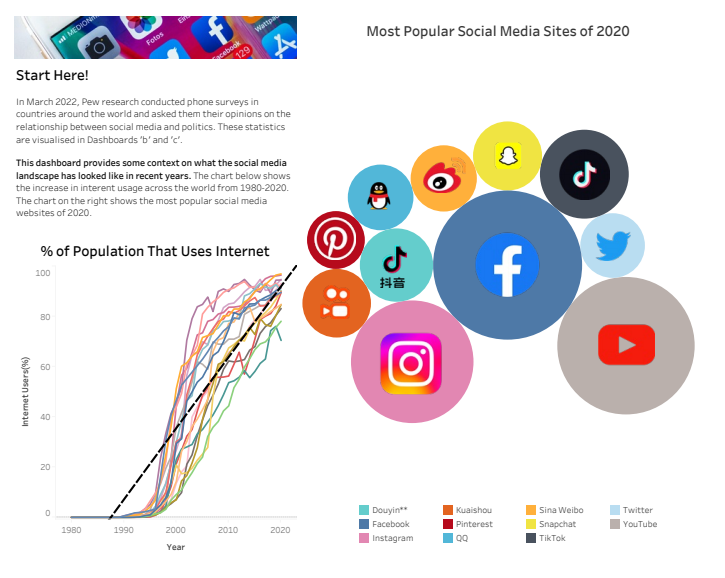

Data Visualisation
Project Description
I created a data visualization dashboard that explores peoples perception of social media and it's affect on democracy. The data was retrieved from public repositories made available by Pew Research, and was analysed and cleaned using Microsoft Excel. The dashboard consists of interactive charts that provides insights and interpretations of the data, such as the correlation between social media use and democratic satisfaction, and the variation of opinions across different countries. The dashboard is designed to be clear, engaging, and informative, using Tableau’s features and best practices.
Skills + Tools Used
- Tableau
- Data Analysis
- Data Cleaning and Preparation
- Dashboard Design
- Statisical Knowledge